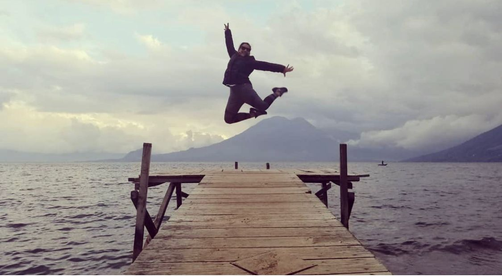
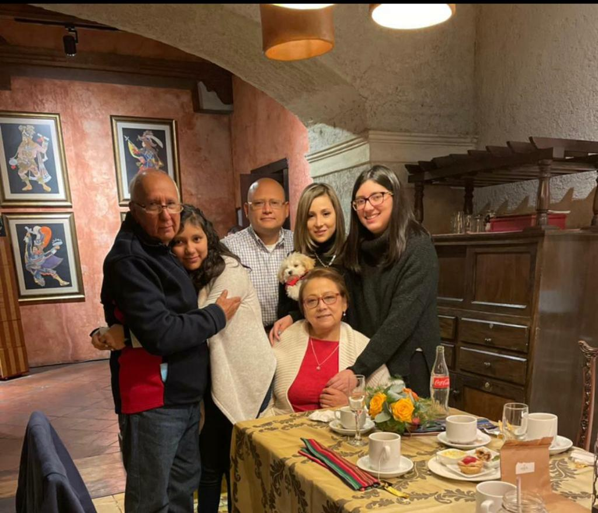
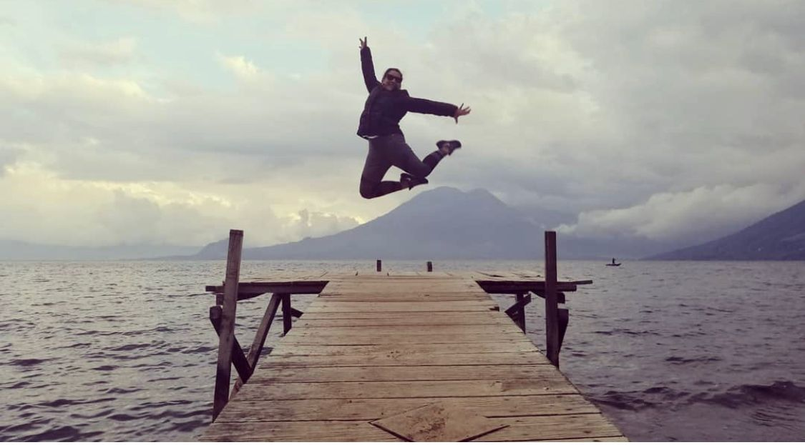
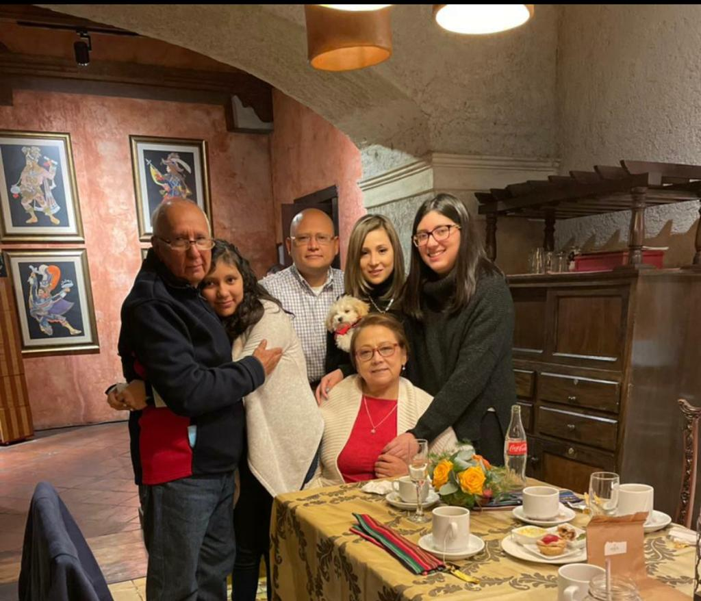

Ruth Alegría nació el 22 de Diciembre. Sus padres son Juan Antonio Alegría y Sara Godoy. Tiene dos hermanos: Alejandro y Juan Estuardo. A traves del tiempo la ha marcado el amor de Dios para afrontar las situaciones dificiles, pero tambien esto se refleja en el amor de su familia y los valores que aprendió en su hogar. A Ruth le encanta leer y escuchar musiva ya que le permite sentir y experimentar varias cosas. No tiene un genero especifico que le encante pero la mayoria de sus canciones favoritas son las que le permite recordar momentos especiales de su vida.
 


